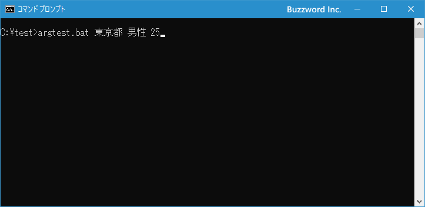
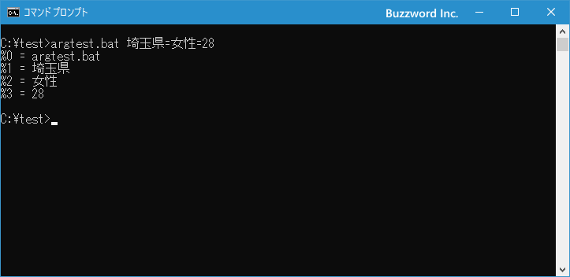
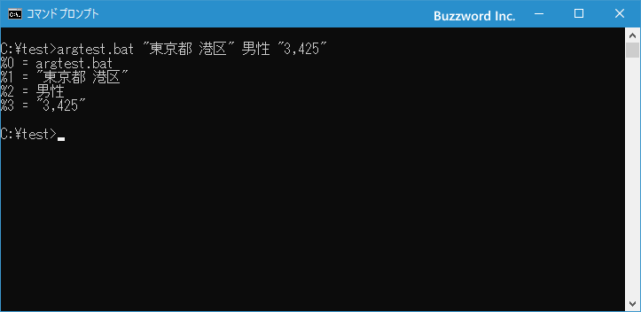
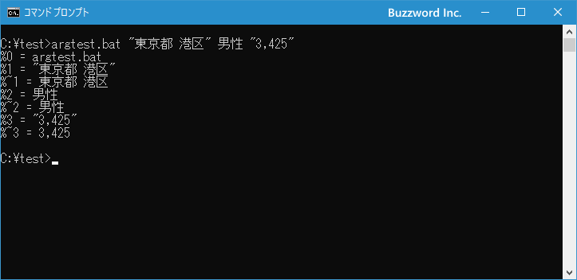
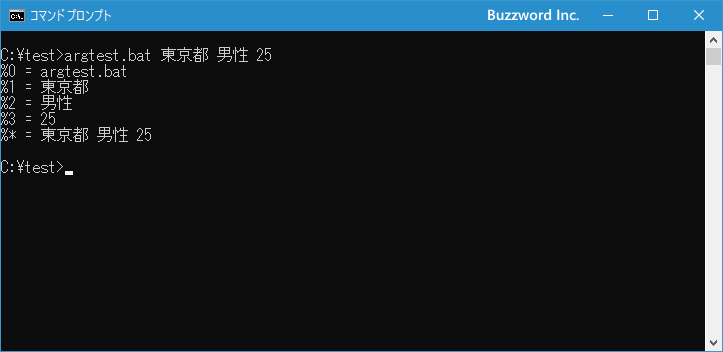

バッチファイル実行時に引数を渡す
バッチファイルを実行する時に引数を指定してバッチファイルへ引き渡すことができます。受け取った引数はバッチファイルの中で取り出し利用することができます。ここではバッチファイルで引数を利用する方法について解説します。
目次
引数の指定とバッチファイル内で引数を参照する方法
バッチファイルを実行するときにコマンドライン引数を指定するには次のように記述します。
バッチファイル 引数1 引数2 ...
複数の引数を指定する場合は区切り文字として半角スペース(他にもあり、後程説明します)で区切って記述します。
コマンドライン引数で渡された値は、バッチファイルの中で %1 ~ %9 という特別な記述を使って取り出して使うことができます(最大で9個の引数を参照できます。10個目以上の引数を使う場合は「バッチファイルで10個以上の引数を使う」を参照してください)。1番目の引数は %1 、2番目の引数は %2 のように対応しています。また %0 には実行しているバッチファイルの名前が入っています。
テストを行うために次のような簡単なバッチファイル argtest.bat を c:\test に作成しました。
@echo off
echo %%0 = %0
echo %%1 = %1
echo %%2 = %2
echo %%3 = %3
ECHO コマンドは引数に指定した任意の文字列を表示することができるコマンドです。例えば「%%0 = 」の部分は文字列なのでそのまま画面に表示されます。(ECHO コマンドでは「%」は特別な文字のため、「%」を文字として表示する場合は「%%」と記述することになっています)。
それではバッチファイルを次のように実行します。
argtest.bat 東京都 男性 25

バッチファイルを実行すると、バッチファイルの中で実行しているバッチファイルの名前と3つの引数の値を参照して画面に表示します。
このようにバッチファイルを実行するときに引数を指定することで、バッチファイルの中で引数の値を参照して利用することができます。
引数の区切り文字の種類
バッチファイルで複数の引数を指定する場合、区切り文字としては半角スペースの他にセミコロン(;)、カンマ(,)、等号(=)が利用できます。
先程のバッチファイルは次のようにも実行することができます。
argtest.bat 東京都 男性 25
argtest.bat 大阪府,女性,23
argtest.bat 愛知県;男性;34
argtest.bat 埼玉県=女性=28
最後の等号を使ったものを実際に試してみます。

念のために確認してみると、区切り文字は混在しても使用できます。次の例では区切り文字としてカンマ(,)と等号(=)を使っています。
argtest.bat 東京都,男性=25
区切り文字で使われる文字を引数の中で文字として使いたい場合
引数として指定する値の中で、空白やカンマなど区切り文字として使われている文字を使いたい場合にはそのまま記述すると区切り文字として扱われてしまいます。
例えば「東京都 港区」「男性」「3,425」という3つの値を引数として渡したい場合、次のように実行してしまうと意図した結果にはなりません。
argtest.bat 東京都 港区 男性 3,425
バッチファイルを実行すると次のように実行されます。なお先ほど試したように区切り文字は混在しても動作するので、引数で使われていない区切り文字を使用しても同じ結果となります。

区切り文字として使用する文字を引数の値の中で使用する場合には、値全体をダブルクォーテーションで囲います。例えば「東京都 港区」「男性」「3,425」という3つの値を引数として渡したい場合は次のように実行します。
argtest.bat "東京都 港区" 男性 "3,425"
バッチファイルを実行すると、区切り文字が含まれている値も正しく引き渡すことができました。

引数で渡された値から引用符(ダブルクォーテーション)を取り除く
区切り文字を含んだ値を引数の値として使用したい場合、値全体をダブルクォーテーションで囲うことで値として引き渡すことができますが、その場合渡された値がダブルクォーテーション付きとなってしまいます。
引数で渡された値からダブルクォーテーションを取り除いて受け取るには、「%1」などの代わりに「%~1」を使用します。
テストを行うために次のような簡単なバッチファイル argtest.bat を c:\test に作成しました。
@echo off
echo %%0 = %0
echo %%1 = %1
echo %%~1 = %~1
echo %%2 = %2
echo %%~2 = %~2
echo %%3 = %3
echo %%~3 = %~3
それでは「東京都 港区」「男性」「3,425」という3つの値を引数として渡すように次のように実行します。
argtest.bat "東京都 港区" 男性 "3,425"
バッチファイルを実行すると、ダブルクォーテーションが含まれている値はダブルクォーテーションが取り除かれて受け取ることができました。

すべての引数の値をまとめて参照する
%0 から %9 までを使うことで引数毎に渡された値を参照することができますが、%* を使うと引数として入力された値を全部まとめて参照することができます。
テストを行うために次のような簡単なバッチファイル argtest.bat を c:\test に作成しました。
@echo off
echo %%0 = %0
echo %%1 = %1
echo %%2 = %2
echo %%3 = %3
echo %%* = %*
それでは「次のように実行します。
argtest.bat 東京都 男性 25
バッチファイルを実行すると、%0 から %3 まではそれぞれの引数の値を参照しますが、%* は引数に入力された値を全部まとめて参照します。

-- --
バッチファイルで引数を引き渡す方法について解説しました。
( Written by Tatsuo Ikura )

著者 / TATSUO IKURA
初心者～中級者の方を対象としたプログラミング方法や開発環境の構築の解説を行うサイトの運営を行っています。